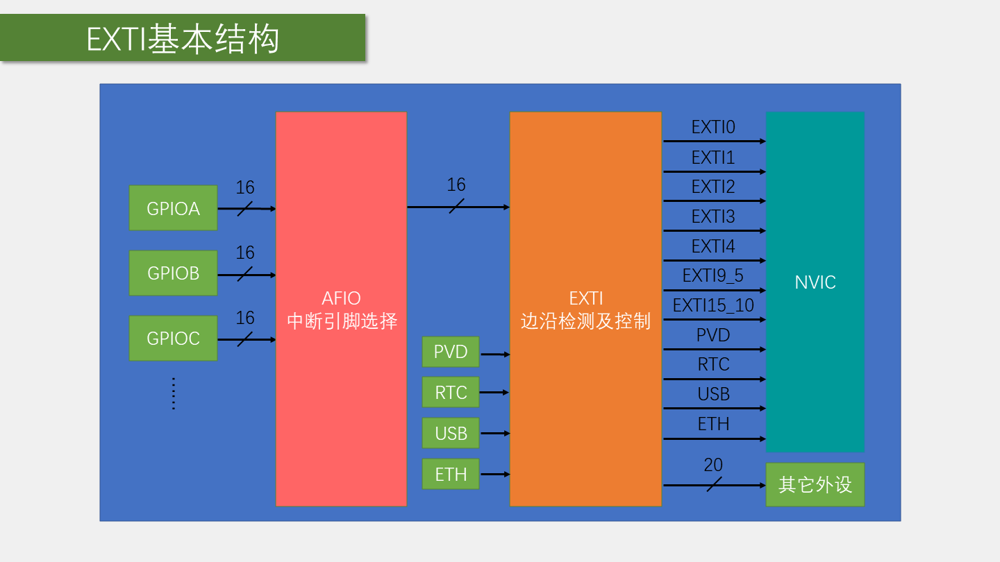
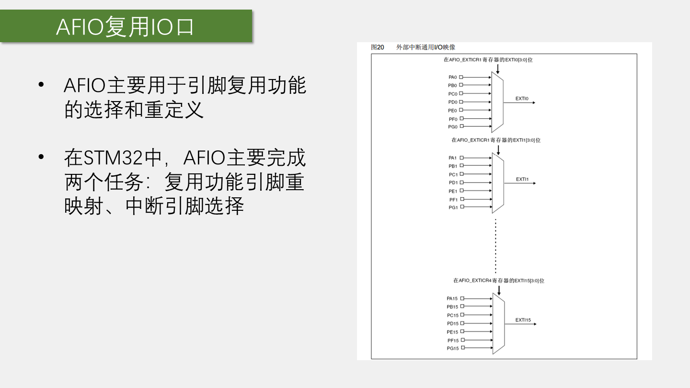

这一课要解决的问题
本课目标
读完你能：说清 EXTI 的 16 条线与 80 多个引脚的映射规则；独立配出一个下降沿触发的外部中断；解释 EXTI0_IRQHandler 到你的回调之间隔了几层；在中断里正确消抖，而不是让它触发十几次。
上一课讲了中断的原理，这一课把它落到具体外设上。EXTI 是最简单的中断源，适合练手。
本课的代码按真实工程分开：CubeMX 生成的 gpio.c、stm32f1xx_it.c 不动；按键的消抖、计数、长按判定属于驱动，放 Hardware/；LED 该闪几下属于业务，放 App/；main.c 只留初始化和主循环。
1. EXTI 的编号规则：为什么是 16 条线
STM32F103C8T6 有 37 个 GPIO，但 EXTI 只有 16 条线（EXTI0~EXTI15）。
规则很简单，但也最容易踩坑：
第 n 条线，接的是每个端口的第 n 号引脚。 也就是说：PA0、PB0、PC0 都连到 EXTI0；PA1、PB1、PC1 都连到 EXTI1……
最重要的限制
PA0、PB0、PC0 不能同时用作外部中断，因为它们共享 EXTI0。你只能选其中一个。
这不是软件限制，是芯片内部的物理连线——EXTI0 只有一根输入线，前面有个 3 选 1 的开关（由 AFIO->EXTICR[0] 控制）。
选错的现象：明明配了 PB0，结果 PA0 一动就触发中断。因为 EXTICR 里最后写入的那个端口生效。
为什么这么设计？因为 EXTI 是给"少数几个关键信号"用的，不是让你把 37 个脚都做成中断。引脚号相同的脚共享一条线，可以省芯片面积。
工程上的选择：按键接 PA0、PB1、PC13 这类引脚号互不相同的口，就不会冲突。
2. 三层调用：从硬件到你的代码
配好 EXTI 后，中断触发时的调用链是这样的：
① 硬件：PA0 出现下降沿 → EXTI0 置挂起位 PR0
② NVIC：按优先级决定何时响应 → 跳到向量表 0x58（EXTI0_IRQn）
③ EXTI0_IRQHandler() ← 在 stm32f1xx_it.c，CubeMX 生成
④ HAL_GPIO_EXTI_IRQHandler(pin) ← HAL 库，清标志位 + 调回调
⑤ HAL_GPIO_EXTI_Callback(pin) ← 你写的业务代码
第 ③ 层长这样（stm32f1xx_it.c）：
文件：Core/Src/stm32f1xx_it.c（CubeMX 生成，不用你手写）
/* 函数名由启动文件的向量表规定，一个字都不能改；
* 这个文件每次生成都会被重写，业务代码不要写在这里（USER CODE 段除外）
*/
void EXTI0_IRQHandler(void)
{
HAL_GPIO_EXTI_IRQHandler(GPIO_PIN_0); /* 清挂起位 + 调你的回调 */
}
哪些没写：中断入口这一层不用你写。CubeMX 勾上 EXTI 后自动生成这个函数和向量表表项。用了 PB1 时还会生成 EXTI1_IRQHandler，内容同理。
名字写错的现象：比如写成 Exti0_IRQHandler，链接器不会报错，而是保留启动文件里的弱符号 Default_Handler（一个死循环）。现象是"一按按键就卡死，调试器显示 PC 停在 Default_Handler"。
第 ④ 层（HAL 内部）：
文件：Drivers/STM32F1xx_HAL_Driver/Src/stm32f1xx_hal_gpio.c（HAL 库源码，只读不改）
/* 它做三件事：判断、清标志、调回调 */
void HAL_GPIO_EXTI_IRQHandler(uint16_t GPIO_Pin)
{
if (__HAL_GPIO_EXTI_GET_IT(GPIO_Pin) != 0x00u) { /* 是不是这个脚触发的 */
__HAL_GPIO_EXTI_CLEAR_IT(GPIO_Pin); /* 清挂起位！ */
HAL_GPIO_EXTI_Callback(GPIO_Pin); /* 调你的回调 */
}
}
为什么不用自己写 EXTI->PR = GPIO_PIN_0;：只写这一句的话，多条线共用一个处理函数时（比如 EXTI5~9 都进 EXTI9_5_IRQHandler）你分不清是谁触发的，也容易漏掉"先判断再清"的顺序。HAL 这两行已经处理好了，代价只是一次函数调用。
为什么要清标志位
EXTI 的挂起位（PR 寄存器）置 1 后不会自动清零。不清的话，中断返回后 CPU 立刻又看到挂起位是 1，再次进入中断——无限中断风暴，主程序完全跑不起来。
现象：程序"卡死"，但用调试器暂停会发现 PC 在 ISR 里打转。
HAL 已经帮你清了，所以你写回调时不需要清。但如果你绕过 HAL 直接写寄存器，这一步必须自己做。
`HAL_GPIO_EXTI_Callback` 是弱函数
它定义在 stm32f1xx_hal_gpio.c 里，内容是空的：
文件：Drivers/STM32F1xx_HAL_Driver/Src/stm32f1xx_hal_gpio.c（HAL 库里的空实现，带 __weak）
__weak void HAL_GPIO_EXTI_Callback(uint16_t GPIO_Pin)
{
UNUSED(GPIO_Pin); /* 参数没用到，消掉编译警告 */
}
哪些没写：函数原型声明在 stm32f1xx_hal_gpio.h，__weak 属性由库负责；编译器/链接器看到你 Hardware/Src/key.c 里同名的强符号，就自动选你的。所以你不必（也不能）再声明一次 __weak。
你在自己文件里重新定义同名函数，链接器就会用你的版本。这和启动文件里的 .weak EXTI0_IRQHandler 是同一套机制。
注意：HAL 的回调是所有 EXTI 线共用的，所以全工程只能定义一次，且函数里必须用 if (GPIO_Pin == ...) 区分是哪个脚触发的。这就是本课把它放在 Hardware/Src/key.c 里的原因——以后加第二个 EXTI 外设，也在这个回调里分发。
3. CubeMX 配置
3.1 引脚
PA0 点成 GPIO_EXTI0（下拉菜单里选 EXTI line0）。
3.2 GPIO 参数
| 配置项 | 值 | 理由 |
|---|---|---|
| GPIO mode | External Interrupt Mode with Falling edge trigger detection | 按键接地，按下是 1→0，下降沿 |
| GPIO Pull-up/Pull-down | Pull-up | 按键另一端接 GND，必须有上拉给出确定电平 |
| User Label | KEY |
生成 KEY_Pin / KEY_GPIO_Port 宏 |
为什么选下降沿而不是双边沿
按键按下和松开都会产生抖动，如果配双边沿，一次按键会触发两组中断，处理逻辑要区分"这是按下还是松开"，复杂度翻倍。
只配下降沿（按下），逻辑最简单：每次下降沿都可能是一次"用户想操作"。注意边沿检测不等于防抖：按下时触点弹跳仍可能产生多个下降沿；松手时如果触点弹跳重新闭合，也会产生下降沿。所以还要靠 20ms 时间窗或暂时关闭 EXTI 来防抖。
需要检测"按住多久"时，才需要在中断里记下时间戳。
用 `Pull-up` 还是 `Pull-down` 必须和电路一致
- 按键一端接 GND → 配
Pull-up，触发边沿选 Falling（下降沿），按下读到 0。 - 按键一端接 3.3V → 配
Pull-down，触发边沿选 Rising（上升沿），按下读到 1。
配反了的现象：永远不触发中断，因为引脚电平根本不变（s4 练习 1 讲过这个错误）。
3.3 NVIC
左侧 System Core → NVIC，找到 EXTI line0 interrupt，勾上 Enabled。
这里能看到优先级设置：
| 参数 | 值 | 说明 |
|---|---|---|
| Preemption Priority | 2 | 抢占级，0 最高 |
| Sub Priority | 0 | 本工程用 GROUP_4，这个值无效 |
为什么给 2 而不是 0
0 留给最紧急的中断（比如故障保护、看门狗）。按键这类人机交互给中等优先级就行。
如果给 0，它会打断所有其他中断。万一按键抖动触发得特别频繁，就可能把串口、定时器全饿死。
4. 代码与消抖
4.1 最简版本（有 bug）
文件：Hardware/Src/key.c（最简片段，有 bug，别照抄）
/* KEY_Pin 来自 main.h，是 CubeMX 按 User Label（KEY）生成的宏。
* 这一段只演示"回调里直接干活"，没有消抖。
*/
void HAL_GPIO_EXTI_Callback(uint16_t GPIO_Pin)
{
if (GPIO_Pin == KEY_Pin) { /* 只处理按键那一根线 */
HAL_GPIO_TogglePin(GPIOC, GPIO_PIN_13);
}
}
这个版本的问题：按一下 LED 可能翻转好几次。
因为机械抖动会在下降沿产生十几个脉冲，每个脉冲都触发一次中断。测试方法：在回调里 count++，按一下看 count 变成几。
4.2 正确版本：ISR 内时间戳消抖
文件分工：
| 文件 | 文件夹 | 作用 |
|---|---|---|
key.h |
Hardware/Inc/ |
消抖窗口宏、Key_TakeEvent() 声明 |
key.c |
Hardware/Src/ |
EXTI 回调、时间戳消抖、事件标志 |
main.c |
Core/Src/ |
初始化、主循环取事件翻 LED |
main.h、gpio.c、stm32f1xx_it.c |
Core/ |
CubeMX 生成：PA0=EXTI0 + Pull-up + 下降沿、NVIC 抢占级 2；不手写 |
文件：Hardware/Inc/key.h
#ifndef __KEY_H
#define __KEY_H
#ifdef __cplusplus
extern "C" {
#endif
#include "main.h"
/* KEY_Pin / KEY_GPIO_Port：CubeMX 里 PA0 的 User Label 设为 KEY 后生成在 main.h */
#define KEY_DEBOUNCE_MS 20U /* 抖动窗口：必须大于最大机械抖动时间 */
uint8_t Key_TakeEvent(void); /* 主循环调用：1 = 有一次有效按下，读完自动清 0 */
#ifdef __cplusplus
}
#endif
#endif /* __KEY_H */
文件：Hardware/Src/key.c
#include "key.h"
static volatile uint8_t s_event = 0; /* 中断置 1，主循环清 0 */
static uint32_t s_last = 0; /* 上次被接受的中断时刻（ms） */
/* 全工程唯一的 EXTI 回调：放驱动文件里，不塞进 main.c */
void HAL_GPIO_EXTI_Callback(uint16_t GPIO_Pin)
{
uint32_t now = HAL_GetTick();
if (GPIO_Pin != KEY_Pin) return; /* 只处理 PA0 */
if (now - s_last < KEY_DEBOUNCE_MS) return; /* 20ms 内的重入都当抖动丢掉 */
s_last = now;
s_event = 1; /* 只置标志，立刻返回 */
}
uint8_t Key_TakeEvent(void)
{
if (!s_event) return 0;
s_event = 0;
return 1;
}
文件：Core/Src/main.c
#include "main.h"
#include "gpio.h"
#include "key.h"
void SystemClock_Config(void);
int main(void)
{
HAL_Init();
SystemClock_Config();
MX_GPIO_Init(); /* PA0 的 EXTI 与 NVIC 都在这里配好 */
while (1)
{
if (Key_TakeEvent()) {
HAL_GPIO_TogglePin(GPIOC, GPIO_PIN_13); /* 业务放主循环 */
}
}
}
/* 以下两个函数是 CubeMX 生成的固定内容，不用你手写 */
void SystemClock_Config(void)
{
RCC_OscInitTypeDef osc = {0};
RCC_ClkInitTypeDef clk = {0};
osc.OscillatorType = RCC_OSCILLATORTYPE_HSE;
osc.HSEState = RCC_HSE_ON;
osc.HSEPredivValue = RCC_HSE_PREDIV_DIV1;
osc.PLL.PLLState = RCC_PLL_ON;
osc.PLL.PLLSource = RCC_PLLSOURCE_HSE;
osc.PLL.PLLMUL = RCC_PLL_MUL9; /* 8MHz × 9 = 72MHz */
if (HAL_RCC_OscConfig(&osc) != HAL_OK) { Error_Handler(); }
clk.ClockType = RCC_CLOCKTYPE_HCLK | RCC_CLOCKTYPE_SYSCLK
| RCC_CLOCKTYPE_PCLK1 | RCC_CLOCKTYPE_PCLK2;
clk.SYSCLKSource = RCC_SYSCLKSOURCE_PLLCLK;
clk.AHBCLKDivider = RCC_SYSCLK_DIV1;
clk.APB1CLKDivider = RCC_HCLK_DIV2;
clk.APB2CLKDivider = RCC_HCLK_DIV1;
if (HAL_RCC_ClockConfig(&clk, FLASH_LATENCY_2) != HAL_OK) { Error_Handler(); }
}
void Error_Handler(void)
{
__disable_irq();
while (1) { }
}
三个设计点：
now - s_last < 20过滤抖动。第一次中断记录时间，后续 20ms 内的全丢弃。- ISR 里只置标志，不直接操作 LED。因为
HAL_GPIO_TogglePin虽快，但更重要的是：业务逻辑以后会变复杂（比如要刷新屏幕），不能放中断里。 volatile：s_event在中断里写、主循环里读，不加会被编译器优化掉（s7 讲过）。
为什么这样拆：HAL_GPIO_EXTI_Callback 必须全工程唯一，所以只能有一个文件定义它；把它和 s_last、s_event 放进 key.c，main.c 就只剩"取事件"这一行，以后换 LED 或加打印都不用碰驱动。
哪些没写：EXTI0_IRQHandler（stm32f1xx_it.c 生成）、MX_GPIO_Init() 与 HAL_GPIO_EXTI_MspInit()（引脚、EXTI、NVIC）、main.h 里的 KEY_Pin 宏，全部由 CubeMX 生成。你只负责回调和主循环——这也是为什么改了引脚要在 CubeMX 里改，而不是在代码里找。
为什么"20ms 窗口"不是完美消抖
如果用户按住 1 秒再松开，松开的抖动发生在按下后 1 秒，超过 20ms 窗口，会被当成一次新的按键事件。
对"按下触发"的场景没问题（松开不该触发）。但如果你需要"松开也响应"，这个方案会误判。
更严谨的做法是：
- 下降沿中断里关闭 EXTI，启动一个 20ms 定时器；
- 定时器到期后再读一次引脚电平，确认为低才认；
- 最后重新打开 EXTI。
这需要配合定时器，s9 学完定时器后可以回来实现。
4.3 为什么不用 HAL_Delay 消抖
文件：Hardware/Src/key.c（错误示范片段，别照抄）
void HAL_GPIO_EXTI_Callback(uint16_t GPIO_Pin)
{
HAL_Delay(20); /* ❌ 就在这里死等 20ms */
if (HAL_GPIO_ReadPin(KEY_GPIO_Port, KEY_Pin) == GPIO_PIN_RESET) {
s_event = 1;
}
}
这在 EXTI 里必然死锁：HAL_Delay 依赖 SysTick，而 SysTick 优先级是 15，EXTI 是 2。SysTick 打断不了 EXTI0 的 ISR，uwTick 不涨，HAL_Delay 永远返回不了。
为什么不用软件延时替代：把 HAL_Delay(20) 换成 for 空循环虽然不会死锁，但同样让中断占了 20ms，期间串口/定时器全停；而且靠 for 计时，换优化等级就变。唯一正确的时间判断是"记时间戳、过后再比较"。
现象：一按按键，整个程序卡死。这是新手最常见的"死机"原因之一。
5. 中断方式 vs 轮询方式，怎么选
| 维度 | 轮询（s4） | 中断（本课） |
|---|---|---|
| 响应延迟 | 最坏 = 一圈循环时间 | 微秒级 |
| CPU 占用 | 每 10ms 检查一次，很便宜 | 无事时零占用 |
| 实现复杂度 | 低 | 中（要清标志、防抖动） |
| 适合场景 | 按键、慢速开关 | 急停、编码器、外部脉冲计数 |
按键到底该用轮询还是中断
实际项目里，按键多数用轮询。
原因：按键是"人"的操作，100ms 内响应都没问题，轮询完全够；而中断方式要为抖动、误触发、多键共用 EXTI 线做一堆处理，反而更容易出 bug。
中断适合的是"事件来得快、丢了就麻烦"的场景：编码器脉冲、外部中断信号、急停按钮。
这道题面试常问，答"按键用轮询，急停用中断，并说出理由"比"都用中断显得高级"要加分。
6. 动手项目
动手项目
双按键：中断计数 + 长按复位
用 PA0（EXTI0）和 PB1（EXTI1）两个按键：
- PA0 短按：LED 翻转
- PB1 每按一次：内部计数器
count++，用调试器观察 - PB1 长按 2 秒：
count清零，并让 LED 快闪 3 次表示"reset"（串口还没学，先用闪灯代替）
验收标准：
- 快速连按 PA0 十次，LED 恰好翻转 10 次（消抖有效）。
- 两个按键互不干扰（验证引脚号不同、不共用 EXTI 线）。
- 长按 2 秒只触发一次复位，不会连续触发。
- 用调试器看
count，PB1 每按一次准确 +1。
提示：长按检测需要在主循环里用 HAL_GetTick() 轮询按键状态，不能只在中断里判断——因为"按住"期间没有新的中断。松手也没有中断（只配了下降沿），所以还得轮询引脚电平判断松手。
6.1 CubeMX 配置补充
| 引脚 | 模式 | 上下拉 | User Label | NVIC |
|---|---|---|---|---|
| PA0 | GPIO_EXTI0，下降沿 | Pull-up | KEY1 |
EXTI line0，抢占级 2 |
| PB1 | GPIO_EXTI1，下降沿 | Pull-up | KEY2 |
EXTI line1，抢占级 2 |
| PC13 | GPIO_Output，推挽，低速 | No pull | LED |
— |
6.2 文件放置表
| 文件 | 文件夹 | 作用 |
|---|---|---|
key.h |
Hardware/Inc/ |
事件枚举、消抖/长按宏、驱动 API |
key.c |
Hardware/Src/ |
EXTI 回调、消抖、PB1 计数与长按判定、松手检测 |
app_main.h |
App/Inc/ |
业务层 App_Init / App_Task 声明 |
app_main.c |
App/Src/ |
消费按键事件：翻 LED、复位计数、快闪 3 次 |
main.c |
Core/Src/ |
初始化与 while(1) |
main.h、gpio.c、stm32f1xx_it.c |
Core/ |
CubeMX 生成（引脚、EXTI0/EXTI1 入口、NVIC），不手写 |
先写头文件，再写驱动，最后写 main.c。所有文件都是完整内容，可直接覆盖同名文件。
文件：Hardware/Inc/key.h
#ifndef __KEY_H
#define __KEY_H
#ifdef __cplusplus
extern "C" {
#endif
#include "main.h"
/* KEY1_Pin / KEY2_Pin 等宏由 CubeMX 按 User Label 生成在 main.h 里 */
#define KEY_DEBOUNCE_MS 20U /* 通用消抖窗口 */
#define KEY2_LONG_MS 2000U /* PB1 按住多久算长按 */
typedef enum {
KEY_EVENT_NONE = 0,
KEY_EVENT_KEY1_SHORT, /* PA0 按下 */
KEY_EVENT_KEY2_SHORT, /* PB1 按下 */
KEY_EVENT_KEY2_LONG /* PB1 按住 2 秒，只报一次 */
} KeyEvent_t;
KeyEvent_t Key_Task(void); /* 主循环每圈调用一次 */
uint32_t Key_GetCount(void); /* PB1 按下次数 */
void Key_ResetCount(void); /* 清零计数 */
#ifdef __cplusplus
}
#endif
#endif /* __KEY_H */
文件：App/Inc/app_main.h
#ifndef __APP_MAIN_H
#define __APP_MAIN_H
#ifdef __cplusplus
extern "C" {
#endif
void App_Init(void); /* 上电初始化：LED 灭、状态清零 */
void App_Task(void); /* 主循环任务：消费按键事件 */
#ifdef __cplusplus
}
#endif
#endif /* __APP_MAIN_H */
文件：Hardware/Src/key.c
#include "key.h"
static uint32_t s_last1 = 0; /* KEY1 上次被接受的中断时刻 */
static uint32_t s_last2 = 0; /* KEY2 上次被接受的中断时刻 */
static volatile uint8_t s_ev1 = 0; /* KEY1 有新按下 */
static volatile uint8_t s_ev2 = 0; /* KEY2 有新按下 */
static uint8_t s_key2_down = 0; /* KEY2 当前是否处于按下过程 */
static uint8_t s_long_reported = 0; /* 本次按下是否已经报过长按 */
static uint32_t s_press_tick2 = 0; /* KEY2 按下的时刻 */
static uint32_t s_count = 0; /* PB1 按下次数 */
/* EXTI0 和 EXTI1 的入口都会调到这；全工程只此一个回调 */
void HAL_GPIO_EXTI_Callback(uint16_t GPIO_Pin)
{
uint32_t now = HAL_GetTick();
if (GPIO_Pin == KEY1_Pin) {
if (now - s_last1 < KEY_DEBOUNCE_MS) return;
s_last1 = now;
s_ev1 = 1;
} else if (GPIO_Pin == KEY2_Pin) {
if (now - s_last2 < KEY_DEBOUNCE_MS) return;
s_last2 = now;
s_ev2 = 1;
}
}
KeyEvent_t Key_Task(void)
{
uint32_t now = HAL_GetTick();
KeyEvent_t ev = KEY_EVENT_NONE;
if (s_ev1) { /* PA0：一次短按 */
s_ev1 = 0;
ev = KEY_EVENT_KEY1_SHORT;
}
if (s_ev2) { /* PB1：按下即计一次数 */
s_ev2 = 0;
s_count++;
s_key2_down = 1;
s_press_tick2 = now;
s_long_reported = 0;
if (ev == KEY_EVENT_NONE) ev = KEY_EVENT_KEY2_SHORT;
}
/* 按住不放时没有新中断，只能在主循环里查时间 */
if (s_key2_down && !s_long_reported &&
(now - s_press_tick2 >= KEY2_LONG_MS)) {
s_long_reported = 1;
ev = KEY_EVENT_KEY2_LONG; /* 长按优先上报 */
}
/* 只配了下降沿，松手不会有中断，必须读引脚判断 */
if (s_key2_down &&
HAL_GPIO_ReadPin(KEY2_GPIO_Port, KEY2_Pin) == GPIO_PIN_SET) {
s_key2_down = 0;
}
return ev;
}
uint32_t Key_GetCount(void)
{
return s_count;
}
void Key_ResetCount(void)
{
s_count = 0;
}
文件：App/Src/app_main.c
#include "app_main.h"
#include "key.h"
static uint8_t s_blink_left = 0; /* 还要翻转几次电平（6 次 = 亮灭 3 回） */
static uint32_t s_blink_tick = 0; /* 上次翻转的时刻 */
void App_Init(void)
{
HAL_GPIO_WritePin(GPIOC, GPIO_PIN_13, GPIO_PIN_SET); /* PC13 低电平点亮，先灭 */
}
void App_Task(void)
{
KeyEvent_t ev = Key_Task(); /* 驱动层把按键变成事件 */
uint32_t now = HAL_GetTick();
if (ev == KEY_EVENT_KEY1_SHORT) {
HAL_GPIO_TogglePin(GPIOC, GPIO_PIN_13);
} else if (ev == KEY_EVENT_KEY2_LONG) {
Key_ResetCount(); /* 长按 2 秒：计数清零 */
s_blink_left = 6; /* 翻转 6 次 = 快闪 3 下 */
s_blink_tick = now;
}
if (s_blink_left) { /* 非阻塞快闪：不用 HAL_Delay */
if (now - s_blink_tick >= 100U) {
s_blink_tick = now;
HAL_GPIO_TogglePin(GPIOC, GPIO_PIN_13);
s_blink_left--;
}
}
}
文件：Core/Src/main.c
#include "main.h"
#include "gpio.h"
#include "app_main.h"
void SystemClock_Config(void);
int main(void)
{
HAL_Init();
SystemClock_Config();
MX_GPIO_Init(); /* PA0/PB1 的 EXTI、NVIC，PC13 输出，全部在这里 */
App_Init();
while (1)
{
App_Task(); /* 按键、LED 都在 App 层处理，main 不堆逻辑 */
}
}
/* 以下两个函数是 CubeMX 生成的固定内容，不用你手写 */
void SystemClock_Config(void)
{
RCC_OscInitTypeDef osc = {0};
RCC_ClkInitTypeDef clk = {0};
osc.OscillatorType = RCC_OSCILLATORTYPE_HSE;
osc.HSEState = RCC_HSE_ON;
osc.HSEPredivValue = RCC_HSE_PREDIV_DIV1;
osc.PLL.PLLState = RCC_PLL_ON;
osc.PLL.PLLSource = RCC_PLLSOURCE_HSE;
osc.PLL.PLLMUL = RCC_PLL_MUL9; /* 8MHz × 9 = 72MHz */
if (HAL_RCC_OscConfig(&osc) != HAL_OK) { Error_Handler(); }
clk.ClockType = RCC_CLOCKTYPE_HCLK | RCC_CLOCKTYPE_SYSCLK
| RCC_CLOCKTYPE_PCLK1 | RCC_CLOCKTYPE_PCLK2;
clk.SYSCLKSource = RCC_SYSCLKSOURCE_PLLCLK;
clk.AHBCLKDivider = RCC_SYSCLK_DIV1;
clk.APB1CLKDivider = RCC_HCLK_DIV2;
clk.APB2CLKDivider = RCC_HCLK_DIV1;
if (HAL_RCC_ClockConfig(&clk, FLASH_LATENCY_2) != HAL_OK) { Error_Handler(); }
}
void Error_Handler(void)
{
__disable_irq();
while (1) { }
}
为什么长按判定放 Key_Task 而不是回调里：按住期间没有新中断，回调只会在按下的那一刻进一次；只有主循环持续读时间，才能发现"已经按住 2 秒"。而松手也没有中断，所以还要用 HAL_GPIO_ReadPin 轮询引脚，才能结束这次按下。
为什么用 s_long_reported 而不是直接比较时间：now - s_press_tick2 >= 2000 一旦成立就会一直成立，每一圈主循环都会再报一次长按，count 被反复清零、灯一直闪。加一个"本次按下已上报"标志，才能做到"长按只触发一次"。
为什么不用 HAL_Delay(2000) 判长按：那会堵死整个主循环 2 秒，期间 PA0 按了也不响应、快闪也停了。非阻塞的时间戳写法是 s6 的通用套路。
哪些没写：MX_GPIO_Init()（两个 EXTI 的边沿、上下拉）、HAL_GPIO_EXTI_MspInit()（EXTI0/EXTI1 的 NVIC 优先级）、EXTI0_IRQHandler / EXTI1_IRQHandler（stm32f1xx_it.c）、main.h 里的 KEY1_Pin / KEY2_Pin 宏，全部由 CubeMX 生成。你在 CubeMX 里改引脚，代码里的宏自动跟着变。
练习 1：为什么两个按键打架了
有人把按键 1 接 PA0、按键 2 接 PB0，两个都配成 EXTI 下降沿。结果按 PA0 时，两个回调逻辑都跑了。为什么？
参考答案
因为 PA0 和 PB0 共用 EXTI0。
AFIO->EXTICR[0] 只能选一个端口作为 EXTI0 的源。CubeMX 最后写的是 PB0（或 PA0，取决于生成顺序），只有被选中的那个能触发。
更糟的是：如果两个都"配了"，实际上只有一个物理通道，你在 HAL_GPIO_EXTI_Callback 里用 GPIO_Pin == GPIO_PIN_0 去区分是没用的——两条线都叫 PIN_0，无法区分。所以"两个回调都跑了"实际上是同一个回调被调用，而你误以为是两个。
改法：让两个按键的引脚号不同。比如 PA0（EXTI0）和 PB1（EXTI1），或者 PA0 和 PC13（EXTI13）。
练习 2：数一数中断次数
某按键抖动持续 8ms，抖动期间电平跳变 10 次。配了下降沿触发、20ms 时间戳消抖。实际会执行几次"翻转 LED"？如果把消抖窗口改成 5ms 呢？
参考答案
20ms 窗口：执行 1 次。
过程：第一次下降沿进入中断，s_last = now，置标志 → LED 翻转。之后 8ms 内的 9 次跳变（假设其中约 5 次是下降沿）都满足 now - s_last < 20，直接 return。
5ms 窗口：可能执行 2 次。
8ms 的抖动期超过了 5ms 窗口，第 6ms 左右的那次下降沿会被当成新事件，LED 再翻转一次。最终状态可能和预期相反（翻转两次 = 回到原状态），看起来像"没反应"。
结论：消抖窗口必须大于最大抖动时间。通用器件按 20ms 取，老旧或劣质按键可能要 50ms。
这个练习也说明了：消抖窗口太短和太长都有问题——太长会把用户真正的快速连按吃掉。
附：PPT 原图对照

PPT 第 47 页：EXTI 与 GPIO 的映射关系。这页能直观看到"16 条线、每条线前面有个多选一开关"，就是正文第 1 节讲的那个限制。

PPT 第 48 页：AFIO 的两个任务——复用功能重映射和中断引脚选择。正文第 1 节提到的 AFIO->EXTICR 就是后者。
7. 本课小结
- EXTI 只有 16 条线，引脚号相同就共用；PA0/PB0/PC0 只能选一个，靠
AFIO->EXTICR选择。 - 调用链：硬件 → 向量表 →
EXTI0_IRQHandler→HAL_GPIO_EXTI_IRQHandler（清标志）→HAL_GPIO_EXTI_Callback（你的代码）。 - 挂起位必须清，HAL 已代劳；不清会导致中断风暴。
- 按键接 GND 配
Pull-up+ 下降沿；接 3.3V 配Pull-down+ 上升沿。配反了永不触发。 - ISR 里不能用
HAL_Delay（优先级低于 SysTick 会死锁），只置标志。 - 消抖用"时间戳窗口"，窗口要大于最大抖动时间（一般 20ms）。
- 按键实际项目多用轮询，中断留给"丢了就麻烦"的信号。
- 工程结构：回调与消抖在
Hardware/Src/key.c，业务在App/Src/app_main.c，main.c只留着初始化和App_Task()。
自检
- 我能解释为什么 PA0 和 PB0 不能同时做外部中断
- 我能画出从硬件到回调的四层调用链
- 我知道不清挂起位会发生什么
- 我能根据按键接法选对触发边沿和上下拉
- 我知道为什么 EXTI 里不能调 HAL_Delay
- 我能写出带时间戳消抖的回调
- 我能把按键驱动、业务、main 分到三个文件里
下一课预告：s9 定时器基础：PSC、ARR 与定时中断。这是整个课程里最核心的一课——定时器的时基单元（PSC/CNT/ARR）是后面 PWM、输入捕获、编码器的共同基础。你会第一次遇到"影子寄存器"这个反直觉的设计，也会算出 59.65 秒这个标志性的最大定时值。